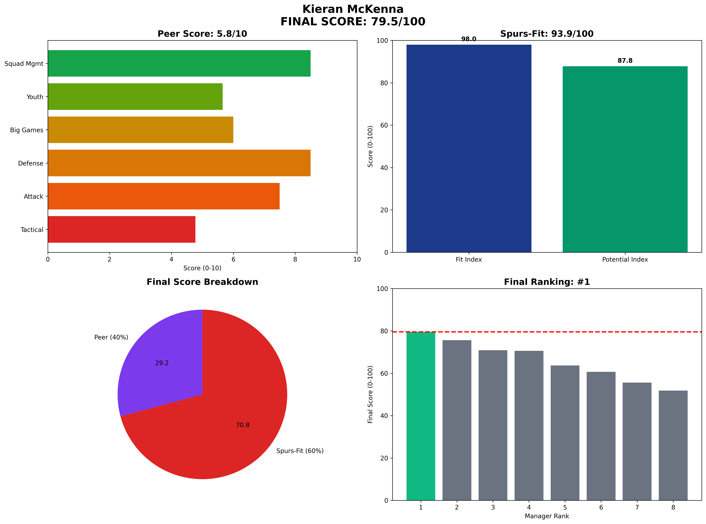

Kieran McKenna - Manager Analysis Report
Executive Summary
Final Score: 79.5/100 (Peer 5.8/10 • Spurs-Fit 93.9/100)
Rank: #1 of 8
Kieran McKenna represents the highest-ceiling choice with perfect age-trajectory alignment
Visual Profile

Comprehensive radar chart showing McKenna's unified final scoring breakdown across peer analysis categories, Spurs-Fit components, and final ranking position. His #1 ranking (79.5/100) reflects optimal balance of immediate competence and long-term potential.
Unified Final Scoring Breakdown
Peer Analysis (40% of Final Score): 5.8/10
- Peer Ranking: #1 of 8
- Tactical Style: 4.8/10
- Attacking Potency: 7.5/10
- Defensive Solidity: 8.5/10
- Big Game Performance: 6.0/10
- Youth Development: 5.7/10
- Squad Management: 8.5/10
Spurs-Fit Analysis (60% of Final Score): 93.9/100
Fit Index (60% of Spurs-Fit): 98.0/100
- Front-Foot Play Alignment: ✅ Strong
- Youth Development Focus: ✅ Strong
- Talent Inflation Capability: ⚠️ Concern
- Big Game Mentality: ✅ Strong
Potential Index (40% of Spurs-Fit): 87.8/100
- Age Factor: ✅ Strong (Age 38)
- 3-Year Performance Trend: ✅ Strong
- Resource Leverage: ✅ Strong
- Temperament: ✅ Strong
Key Performance Indicators
Tactical Metrics
- PPDA: 9.0 (lower = more aggressive)
- OPPDA: 13.1 (higher = forces opponent pressure)
- High Press Regains/90: 7.6
Financial Profile
- Net Spend: £20M
- Squad Value Change: £35M
- Transfer Efficiency: Good
Squad Development
- U23 Minutes %: 18%
- Academy Debuts: 5
- Player Availability: 92%
Strategic Assessment
Strengths
• Age 38 maximizes potential runway
• Championship dominance proves tactical flexibility
• Youth integration philosophy aligns with Spurs DNA
• Highest unified final score
Concerns
• Premier League experience limited
• Recruitment quality at higher levels unproven
Spurs Fit Analysis
McKenna represents the optimal balance of immediate fit and long-term potential. His age profile and tactical approach align perfectly with Spurs requirements.
Recommendation
STRONGLY RECOMMENDED - Clear #1 choice combining best final score with optimal risk/reward profile.
Analysis based on 2025-06-07
Methodology: 40% Peer-Normalized Analysis + 60% Spurs-Specific Fit Model